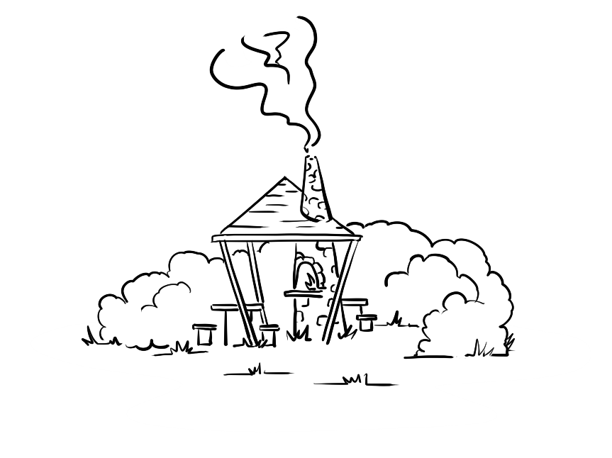
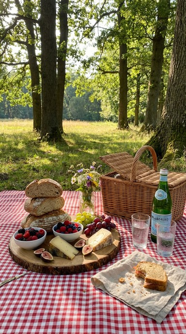
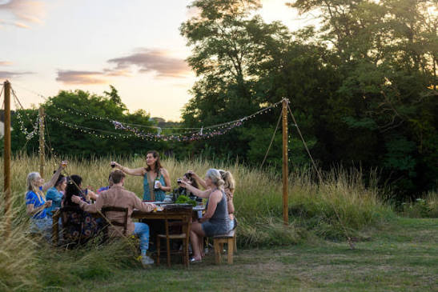
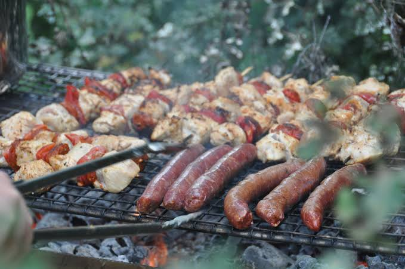

Un panorama exceptionnel 🌅
Situé au beau milieu de l'une de nos plus belles prairies, l'espace barbecue a été aménagé pour offrir un cadre idyllique. Depuis ce point de vue privilégié, vous bénéficiez d'un superbe panorama plongeant sur l'ensemble de la ferme, nos cultures et les paysages vallonnés des environs.
C'est l'endroit parfait pour déconnecter, s'imprégner de la nature et observer de loin la vie paisible de nos troupeaux au pâturage.
Le privilège de nos membres 🤝
Cet espace convivial est exclusivement réservé à nos coopérateurs. C'est notre façon de remercier chaleureusement celles et ceux qui croient en notre projet et soutiennent notre agriculture paysanne au quotidien.
Après avoir récupéré votre panier de bons produits ou lors d'une belle journée d'été, vous pouvez venir vous y installer en famille ou entre amis. C'est un lieu qui vous appartient un peu, puisque vous faites partie intégrante de la coopérative !
Convivialité et produits de la ferme 🥩
Quoi de mieux que de griller de bonnes viandes artisanales directement sur leur lieu de production ? Le barbecue est idéal pour déguster les saucisses et les morceaux de choix préparés dans notre propre boucherie.
Accompagné d'un bon pain au levain de la boulangerie et d'un jus de pomme frais du verger, c'est l'expérience ultime du circuit (très) court, partagée dans la joie et la bonne humeur !


